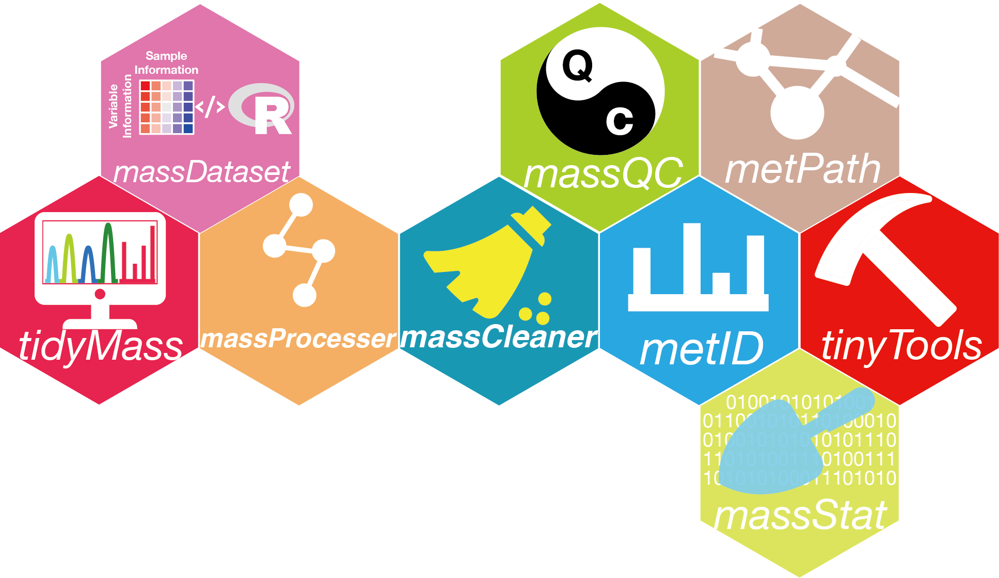

About
The tidymass is a collection of R packages designed for MS-based untargeted metabolomics data processing. All packages share an underlying design philosophy, grammar, and data structures.
Tidymass is a comprehensive computational framework for MS-based untargeted metabolomics data processing and analysis, including raw data processing (peak detecting), data cleaning (missing value processing, data normalization, and integration), statistical analysis, metabolite annotation, and biological function mining (pathway enrichment, feature-based metabolic module analysis).

Installation
You can install tidymass from GitHub.
if(!require(devtools)){
install.packages("devtools")
}
devtools::install_github("tidymass/tidymass")Then you can use tidymass_install() to install all the packages in tidymass.
library(tidymass)
tidymass::tidymass_install(from = "github", force = FALSE)Packages
Now, tidymass contains 8 packages, which are listed below:
massdataset
massdataset is used organize metabolomics experiment data into a mass_dataset class object, that can be processed by all the tidymass packages.
massprocesser

massprocesser is a R package which is used for mass spectrometry based untargeted metabolomics raw data processing.
masscleaner

masscleaner is a R package which is used for metabolomics data cleaning.
massqc

massqc is used for data quality assessment and control.
metid

metid is used for metabolite database construction and metabolite annotation.
massstat

massstat is used for statistical analysis.
metpath

metpath is used for pathway enrichment analysis.
tinytools

tinytools is a collection of useful tiny tools for mass spectrometry data processing and analysis.
Need help?
If you have any questions about tidymass, please don’t hesitate to email me (shenxt@stanford.edu) or reach out me via the social medias below.
{kind=link}
M339, Alway Buidling, Cooper Lane, Palo Alto, CA 94304
Citation
If you use tidymass in you publications, please cite this publication:
X. Shen, R. Wang, X. Xiong, Y. Yin, Y. Cai, Z. Ma, N. Liu, and Z.-J. Zhu* (Corresponding Author), Metabolic Reaction Network-based Recursive Metabolite Annotation for Untargeted Metabolomics, Nature Communications, 2019, 10: 1516.
Web Link.
Thank you very much!